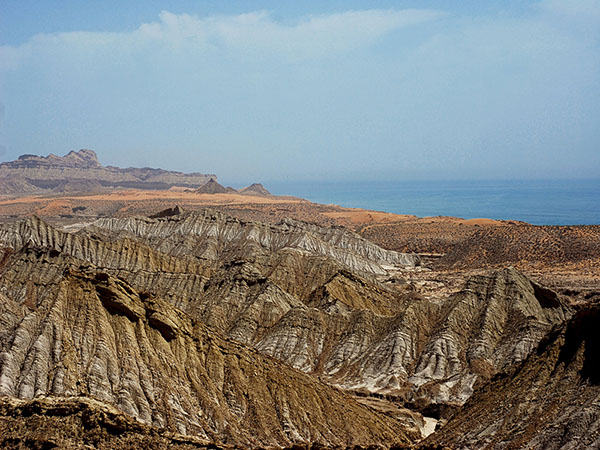
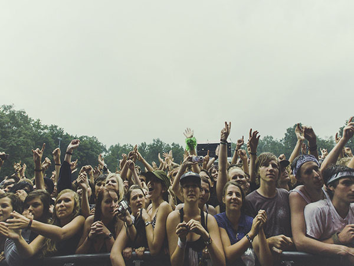
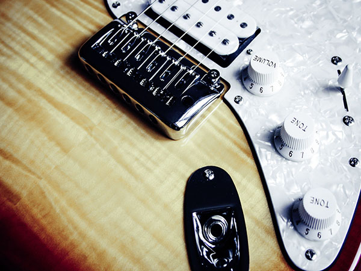
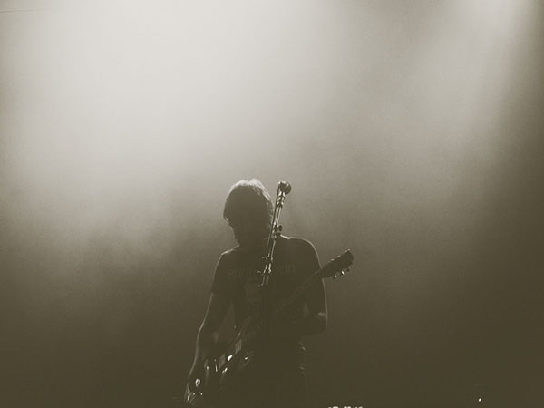
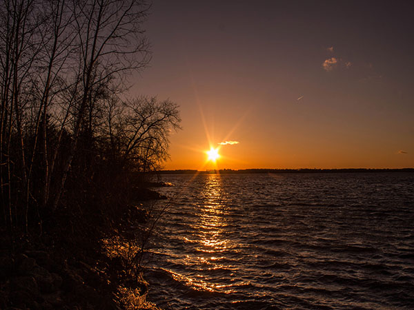
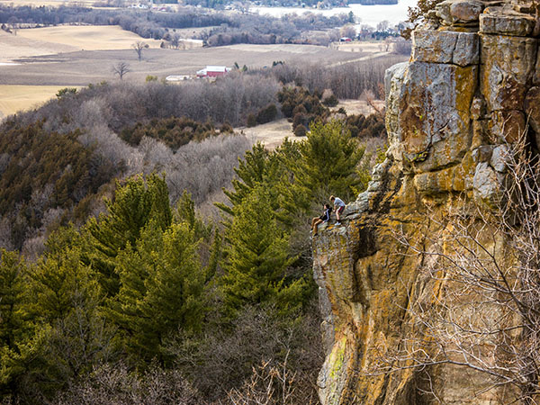

-
 Canyon - F. Akhter Liensed: CC BY 3.0 -
Carrots - M. Spiske Liensed: CC BY 3.0 -
 Music Fans - M. Spiske Liensed: CC BY 3.0 -
 eGuitar - M. Spiske Liensed: CC BY 3.0 -
 Stage - M. Spiske Liensed: CC BY 3.0 -
 Sunset - Y. Chen Liensed: CC BY 3.0 -
 Bluff - Y. Chen Liensed: CC BY 3.0